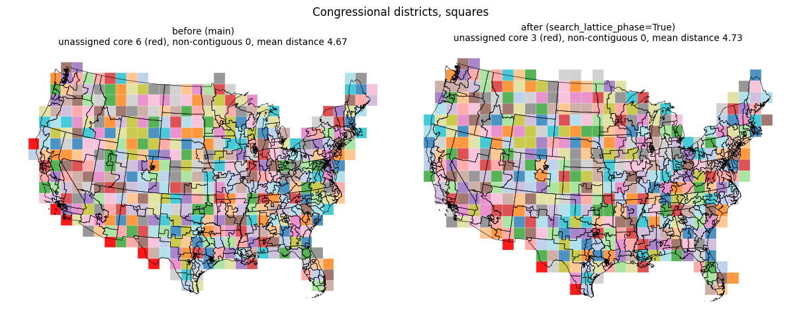
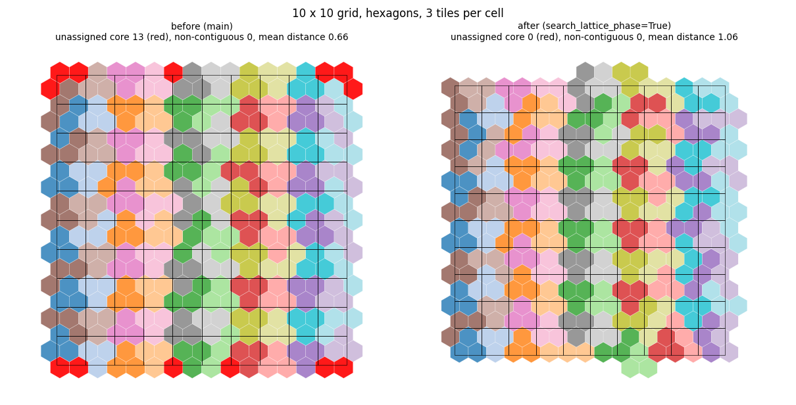
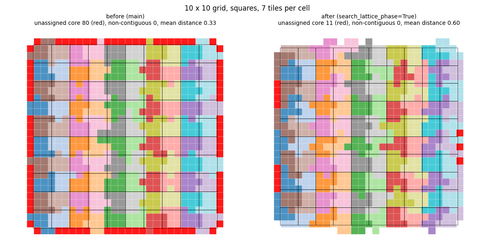

New option search_lattice_phase for the mosaic layout; when calibration ends more than one core tile above the budget, it tries seven more lattice phases and keeps the one with the smallest excess.
Part of #192.
MosaicLayoutOptions.search_lattice_phase (default False): if calibration ends with more than one core tile above the budget, the calibration is repeated with seven additional lattice phases added to the offset; the first phase with an excess of at most one is kept, else the one with the smallest excess.calibrate_lattice_phase in _calibration.py; two tests; changelog entry.No run has an enclosed hole. Every unassigned core tile is a boundary tile with low overlap with the study area: about 0.1 on the grids (a frame of sliver tiles; the 80 tiles at k = 7 on squares total an overlap of 8.9) and 0.1 to 0.5 on states and districts. The count of unassigned core tiles therefore overstates the problem. On states and districts calibration ends within 1 to 5 tiles of the budget (states, hexagons: 153 core tiles against 154), so the step-jump cause from the issue does not apply there; the assignment prefers ring tiles closer to the demand of the regions.
search_lattice_phase=True| Input | Unassigned core | Non-contiguous | Mean distance | Total time (s) | Calibration time (s) | Calibrations |
|---|---|---|---|---|---|---|
| Grid squares, k = 3 | 20 -> 0 | 4 -> 0 | 0.53 -> 0.51 | 0.75 -> 1.74 | 0.34 -> 1.40 | 1 -> 4 |
| Grid squares, k = 7 | 80 -> 11 | 0 -> 0 | 0.33 -> 0.60 | 1.5 -> 3.3 | 0.69 -> 1.49 | 1 -> 2 |
| Grid squares, k = 8 | 96 -> 0 | 0 -> 0 | 0.33 -> 0.61 | 1.7 -> 4.8 | 0.83 -> 3.3 | 1 -> 4 |
| Grid hexagons, k = 3 | 13 -> 0 | 0 -> 0 | 0.66 -> 1.06 | 0.82 -> 1.25 | 0.44 -> 0.85 | 1 -> 2 |
| Grid hexagons, k = 6 | 35 -> 1 | 0 -> 0 | 0.56 -> 0.72 | 1.6 -> 2.4 | 0.78 -> 1.58 | 1 -> 2 |
| Grid hexagons, k = 8 | 21 -> 0 | 0 -> 0 | 0.86 -> 0.50 | 2.7 -> 2.9 | 0.99 -> 1.73 | 1 -> 2 |
| States, squares | 1 -> 1 | 0 -> 0 | 2.55 -> 2.55 | 1.2 -> 1.3 | 0.33 -> 0.42 | 1 -> 1 |
| States, hexagons | 10 -> 5 | 0 -> 0 | 3.37 -> 3.38 | 2.2 -> 2.6 | 1.35 -> 1.72 | 1 -> 2 |
| Districts, squares | 6 -> 3 | 0 -> 0 | 4.67 -> 4.73 | 6.3 -> 9.8 | 3.0 -> 6.0 | 1 -> 2 |
| Districts, hexagons | 13 -> 13 | 0 -> 0 | 6.91 -> 6.91 | 7.7 -> 8.1 | 0.87 -> 0.86 | 1 -> 1 |
Figures (before and after, unassigned core tiles in red): grid-squares-k7.png, grid-hexagons-k3.png, districts-squares.png.
!Grid squares k=7 !Grid hexagons k=3 !Districts squares
min_overlap_frac of 0.2, 0.3 and 0.5 lowers the unassigned count on hexagons (states 10 -> 1, 2, 2; districts 13 -> 7, 3, 2) and raises the mean distance (states 3.37 -> 4.9, 4.3, 4.9; districts 6.91 -> 7.5, 8.1, 8.7). On squares at 0.5 states gets 4 unassigned tiles and 3 split regions.ring_swapback_max_hops of 64 changes the count by at most 2.
districts-squares.png

grid-hexagons-k3.png

grid-squares-k7.png